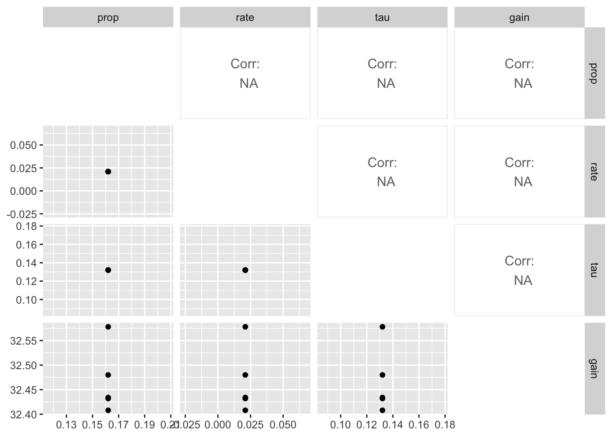

Main results
Overview
Here I apply the model described in the May 13th draft of the paper to the data. I will first ignore the first chunk in the optimization, then include it. I will also try different priors on the parameters to understand the paramater space. Final results from different choices summarized at the end.
Ignoring first chunk in the optimiziation
Basic estimation of Exp1
Let’s apply the modeling approach reported in the paper. We ignore the first chunk (SP1-3) while evaluating the likelihood. Eda did this because the model as implemented predicts the same performance for known and random chunks.
Code
tar_load(exp1_data_agg)
start <- paper_params()
(est <- estimate_model(start, data = exp1_data_agg, exclude_sp1 = TRUE))$start
prop prop_ltm tau gain rate
0.21 0.55 0.14 25.00 0.02
$par
prop prop_ltm tau gain rate
0.108898668 0.575632670 0.091783835 95.188660503 0.009362919
$convergence
[1] 0
$counts
function gradient
2080 NA
$value
[1] 31.92645Code
exp1_data_agg$pred <- predict(est, exp1_data_agg, group_by = c("chunk", "gap"))
exp1_data_agg |>
ggplot(aes(x = gap, y = p_correct, color = chunk)) +
geom_point() +
geom_line() +
geom_line(aes(y = pred), linetype = "dashed") +
scale_color_discrete("First chunk LTM?") +
facet_wrap(~itemtype)
I get startlingly different paramemter estimates. Much lower prop and rate and tau, higher gain.
Trying different starting values
Code
# load the fits of the first simulation, calculate the deviance(s) and predictions
tar_load(fits1)
fits1 <- fits1 |>
mutate(
deviance = pmap_dbl(
list(fit, data, exclude_sp1),
~ overall_deviance(params = `..1`$par, data = `..2`, exclude_sp1 = `..3`)
),
pred = map2(fit, data, ~ predict(.x, .y, group_by = c("chunk", "gap")))
)I’ve run this with many different starting values. We tend to end up in different regions of the parameter space (the top result close to the paper’s estimates):
Code
fits1 |>
filter(priors_scenario == "none", exclude_sp1 == TRUE, exp == 1, deviance <= 50, convergence == 0) |>
select(prop:convergence) |>
arrange(gain) |>
mutate_all(round, 3) |>
print(n = 100)# A tibble: 55 × 7
prop prop_ltm rate tau gain deviance convergence
<dbl> <dbl> <dbl> <dbl> <dbl> <dbl> <dbl>
1 0.176 0.582 0.015 0.133 38.2 32.4 0
2 0.175 0.578 0.015 0.132 38.8 32.4 0
3 0.171 0.582 0.015 0.13 40.3 32.4 0
4 0.165 0.581 0.014 0.127 43.1 32.3 0
5 0.137 0.578 0.012 0.11 61.8 32.1 0
6 0.126 0.577 0.011 0.103 71.8 32.0 0
7 0.125 0.577 0.011 0.103 72.6 32.0 0
8 0.123 0.577 0.011 0.101 75.2 32.0 0
9 0.118 0.576 0.01 0.098 81.8 32.0 0
10 0.118 0.577 0.01 0.098 82.0 32.0 0
11 0.117 0.576 0.01 0.097 83.3 32.0 0
12 0.106 0.575 0.009 0.09 99.4 31.9 0
13 0.106 0.575 0.009 0.09 99.6 31.9 0
14 0.106 0.576 0.009 0.09 99.7 31.9 0
15 0.106 0.575 0.009 0.09 99.8 31.9 0
16 0.106 0.576 0.009 0.09 99.8 31.9 0
17 0.106 0.576 0.009 0.09 99.9 31.9 0
18 0.106 0.575 0.009 0.09 99.9 31.9 0
19 0.106 0.576 0.009 0.09 99.9 31.9 0
20 0.106 0.575 0.009 0.09 99.9 31.9 0
21 0.106 0.575 0.009 0.09 99.9 31.9 0
22 0.106 0.575 0.009 0.09 100. 31.9 0
23 0.106 0.576 0.009 0.09 100. 31.9 0
24 0.106 0.576 0.009 0.09 100. 31.9 0
25 0.106 0.576 0.009 0.09 100. 31.9 0
26 0.106 0.576 0.009 0.09 100. 31.9 0
27 0.106 0.576 0.009 0.09 100. 31.9 0
28 0.106 0.577 0.009 0.09 100. 31.9 0
29 0.106 0.575 0.009 0.09 100. 31.9 0
30 0.106 0.576 0.009 0.09 100. 31.9 0
31 0.106 0.574 0.009 0.09 100. 31.9 0
32 0.106 0.575 0.009 0.09 100. 31.9 0
33 0.106 0.576 0.009 0.09 100. 31.9 0
34 0.106 0.575 0.009 0.09 100. 31.9 0
35 0.106 0.575 0.009 0.09 100. 31.9 0
36 0.106 0.576 0.009 0.09 100. 31.9 0
37 0.106 0.574 0.009 0.09 100. 31.9 0
38 0.106 0.576 0.009 0.09 100. 31.9 0
39 0.106 0.576 0.009 0.09 100. 31.9 0
40 0.106 0.575 0.009 0.09 100. 31.9 0
41 0.106 0.576 0.009 0.09 100. 31.9 0
42 0.106 0.575 0.009 0.09 100. 31.9 0
43 0.106 0.575 0.009 0.09 100. 31.9 0
44 0.106 0.574 0.009 0.09 100. 31.9 0
45 0.106 0.576 0.009 0.09 100. 31.9 0
46 0.106 0.576 0.009 0.09 100. 31.9 0
47 0.106 0.575 0.009 0.09 100 31.9 0
48 0.106 0.575 0.009 0.09 100 31.9 0
49 0.106 0.575 0.009 0.09 100 31.9 0
50 0.106 0.575 0.009 0.09 100 31.9 0
51 0.106 0.576 0.009 0.09 100 31.9 0
52 0.106 0.576 0.009 0.09 100 31.9 0
53 0.106 0.576 0.009 0.09 100 31.9 0
54 0.106 0.575 0.009 0.09 100 31.9 0
55 0.106 0.571 0.009 0.09 100 31.9 0Trying priors of the gain parameter
One way to deal with that is to put a prior on the gain parameter to keep it near 25. I know priors are usually a bayesian thing, but they work with ML optimization just as well. On the next set of simulations, I used a Normal(25, 0.1) prior on the gain parameter (could have also fixed it to this value, but this gives me mroe control).
Code
fits1 |>
filter(priors_scenario == "gain", exclude_sp1 == TRUE, exp == 1, deviance <= 50, convergence == 0) |>
select(prop:convergence) |>
arrange(gain) |>
mutate_all(round, 3) |>
print(n = 100)# A tibble: 23 × 7
prop prop_ltm rate tau gain deviance convergence
<dbl> <dbl> <dbl> <dbl> <dbl> <dbl> <dbl>
1 0.222 0.587 0.019 0.154 25.0 33.0 0
2 0.222 0.588 0.018 0.154 25.0 33.0 0
3 0.222 0.588 0.019 0.154 25 33.0 0
4 0.222 0.588 0.019 0.154 25 33.0 0
5 0.222 0.588 0.019 0.154 25 33.0 0
6 0.222 0.588 0.019 0.154 25 33.0 0
7 0.222 0.588 0.019 0.154 25 33.0 0
8 0.222 0.588 0.019 0.154 25 33.0 0
9 0.222 0.588 0.019 0.154 25.0 33.0 0
10 0.222 0.588 0.019 0.154 25.0 33.0 0
11 0.222 0.588 0.019 0.154 25.0 33.0 0
12 0.222 0.588 0.019 0.154 25.0 33.0 0
13 0.222 0.588 0.019 0.154 25.0 33.0 0
14 0.208 0.398 0.031 0.154 25.0 47.7 0
15 0.222 0.587 0.019 0.154 25.0 33.0 0
16 0.222 0.587 0.019 0.154 25.0 33.0 0
17 0.222 0.587 0.019 0.154 25.0 33.0 0
18 0.222 0.588 0.019 0.154 25.0 33.0 0
19 0.222 0.588 0.019 0.154 25.0 33.0 0
20 0.222 0.588 0.019 0.154 25.0 33.0 0
21 0.222 0.588 0.019 0.154 25.0 33.0 0
22 0.222 0.588 0.019 0.154 25.0 33.0 0
23 0.222 0.588 0.019 0.154 25.0 33.0 0So we do get at least some parameters that are close to that reported in the paper. The predictions with those parameters:
Code
exp1_data_agg$pred <- fits1 |>
filter(priors_scenario == "gain", exclude_sp1 == TRUE, exp == 1, convergence == 0) |>
arrange(deviance) |>
pluck("pred", 1)
exp1_data_agg |>
ggplot(aes(x = gap, y = p_correct, color = chunk)) +
geom_point() +
geom_line() +
geom_line(aes(y = pred), linetype = "dashed") +
scale_color_discrete("First chunk LTM?") +
facet_wrap(~itemtype)
Trying priors on the rate parameter
Maybe there is a region with a higher rate that we have not explored? Let’s try a prior on the rate parameter, ~ Normal(0.1, 0.01).
Code
fits1 |>
filter(priors_scenario == "rate", exclude_sp1 == TRUE, exp == 1, convergence == 0) |>
select(prop:convergence) |>
arrange(deviance) |>
mutate_all(round, 3) |>
print(n = 100)# A tibble: 100 × 7
prop prop_ltm rate tau gain deviance convergence
<dbl> <dbl> <dbl> <dbl> <dbl> <dbl> <dbl>
1 0.435 0.608 0.049 0.202 7.59 43.1 0
2 0.434 0.607 0.049 0.202 7.60 43.1 0
3 0.435 0.607 0.049 0.202 7.59 43.1 0
4 0.435 0.608 0.049 0.202 7.59 43.1 0
5 0.435 0.607 0.049 0.202 7.59 43.1 0
6 0.435 0.608 0.049 0.202 7.59 43.1 0
7 0.434 0.607 0.049 0.202 7.59 43.1 0
8 0.435 0.607 0.049 0.202 7.58 43.1 0
9 0.435 0.607 0.049 0.202 7.59 43.1 0
10 0.435 0.607 0.049 0.202 7.59 43.1 0
11 0.435 0.608 0.049 0.202 7.59 43.1 0
12 0.435 0.607 0.049 0.202 7.59 43.1 0
13 0.435 0.607 0.049 0.202 7.58 43.1 0
14 0.435 0.607 0.049 0.202 7.59 43.1 0
15 0.435 0.607 0.049 0.202 7.59 43.1 0
16 0.435 0.607 0.049 0.202 7.58 43.1 0
17 0.435 0.607 0.049 0.202 7.58 43.1 0
18 0.435 0.607 0.049 0.202 7.59 43.1 0
19 0.435 0.607 0.049 0.202 7.59 43.1 0
20 0.435 0.607 0.049 0.202 7.59 43.1 0
21 0.435 0.607 0.049 0.202 7.58 43.1 0
22 0.435 0.608 0.049 0.202 7.59 43.1 0
23 0.435 0.607 0.049 0.202 7.58 43.1 0
24 0.435 0.607 0.049 0.202 7.58 43.1 0
25 0.435 0.607 0.049 0.202 7.59 43.1 0
26 0.435 0.607 0.049 0.202 7.59 43.1 0
27 0.435 0.607 0.049 0.202 7.58 43.1 0
28 0.435 0.607 0.049 0.202 7.58 43.1 0
29 0.435 0.607 0.049 0.202 7.58 43.1 0
30 0.435 0.607 0.049 0.202 7.58 43.1 0
31 0.435 0.607 0.049 0.202 7.59 43.1 0
32 0.435 0.607 0.049 0.202 7.58 43.1 0
33 0.435 0.607 0.049 0.202 7.58 43.1 0
34 0.435 0.607 0.049 0.202 7.58 43.1 0
35 0.435 0.607 0.049 0.202 7.58 43.1 0
36 0.435 0.607 0.049 0.202 7.58 43.1 0
37 0.435 0.607 0.049 0.202 7.59 43.1 0
38 0.435 0.607 0.049 0.202 7.59 43.1 0
39 0.435 0.607 0.049 0.202 7.58 43.1 0
40 0.435 0.607 0.049 0.202 7.58 43.1 0
41 0.435 0.607 0.049 0.202 7.58 43.1 0
42 0.435 0.607 0.049 0.202 7.59 43.1 0
43 0.435 0.607 0.049 0.202 7.58 43.1 0
44 0.435 0.607 0.049 0.202 7.59 43.1 0
45 0.435 0.607 0.049 0.202 7.58 43.1 0
46 0.435 0.607 0.049 0.202 7.59 43.1 0
47 0.435 0.607 0.049 0.202 7.58 43.1 0
48 0.435 0.608 0.049 0.202 7.58 43.1 0
49 0.435 0.607 0.049 0.202 7.58 43.1 0
50 0.435 0.608 0.049 0.202 7.58 43.1 0
51 0.435 0.607 0.049 0.202 7.58 43.1 0
52 0.435 0.607 0.049 0.202 7.59 43.1 0
53 0.435 0.607 0.049 0.202 7.58 43.1 0
54 0.435 0.607 0.049 0.202 7.59 43.1 0
55 0.435 0.607 0.049 0.202 7.58 43.1 0
56 0.435 0.607 0.049 0.202 7.58 43.1 0
57 0.435 0.607 0.049 0.202 7.58 43.1 0
58 0.435 0.607 0.049 0.202 7.58 43.1 0
59 0.435 0.607 0.049 0.202 7.58 43.1 0
60 0.435 0.607 0.049 0.202 7.58 43.1 0
61 0.435 0.607 0.049 0.202 7.58 43.1 0
62 0.435 0.607 0.049 0.202 7.58 43.1 0
63 0.435 0.608 0.049 0.202 7.59 43.1 0
64 0.435 0.608 0.049 0.202 7.58 43.1 0
65 0.435 0.607 0.049 0.202 7.58 43.1 0
66 0.435 0.607 0.049 0.202 7.58 43.1 0
67 0.435 0.607 0.049 0.202 7.58 43.1 0
68 0.435 0.607 0.049 0.202 7.58 43.1 0
69 0.435 0.607 0.049 0.202 7.58 43.1 0
70 0.435 0.607 0.049 0.202 7.58 43.1 0
71 0.435 0.607 0.049 0.202 7.58 43.2 0
72 0.435 0.608 0.049 0.202 7.58 43.2 0
73 0.435 0.607 0.049 0.202 7.58 43.2 0
74 0.435 0.607 0.049 0.202 7.58 43.2 0
75 0.435 0.607 0.049 0.202 7.58 43.2 0
76 0.435 0.608 0.049 0.202 7.58 43.2 0
77 0.435 0.608 0.049 0.202 7.58 43.2 0
78 0.435 0.607 0.049 0.202 7.58 43.2 0
79 0.435 0.608 0.049 0.202 7.57 43.2 0
80 0.435 0.607 0.049 0.202 7.57 43.2 0
81 0.39 0.375 0.071 0.218 7.90 55.8 0
82 0.39 0.375 0.071 0.218 7.88 55.8 0
83 0.39 0.375 0.071 0.218 7.88 55.8 0
84 0.39 0.375 0.071 0.218 7.88 55.8 0
85 0.39 0.375 0.071 0.218 7.87 55.8 0
86 0.39 0.375 0.071 0.218 7.88 55.8 0
87 0.39 0.375 0.071 0.218 7.88 55.8 0
88 0.39 0.375 0.071 0.218 7.87 55.8 0
89 0.39 0.375 0.071 0.218 7.87 55.8 0
90 0.39 0.375 0.071 0.218 7.88 55.8 0
91 0.39 0.375 0.071 0.218 7.87 55.8 0
92 0.39 0.375 0.071 0.218 7.87 55.8 0
93 0.39 0.375 0.071 0.218 7.87 55.8 0
94 0.39 0.375 0.071 0.218 7.87 55.8 0
95 0.39 0.375 0.071 0.218 7.88 55.8 0
96 0.39 0.375 0.071 0.218 7.87 55.8 0
97 0.39 0.375 0.071 0.218 7.87 55.8 0
98 0.391 0.375 0.071 0.218 7.86 55.8 0
99 0.39 0.375 0.071 0.218 7.87 55.8 0
100 0.386 0.017 0.081 0.226 7.39 75.0 0Deviance is quite much higher. Predictions?
Code
prop prop_ltm rate tau gain
0.43456497 0.60758909 0.04906632 0.20157962 7.58996852 Code
exp1_data_agg$pred <- predict(fit, exp1_data_agg, group_by = c("chunk", "gap"))
exp1_data_agg |>
ggplot(aes(x = gap, y = p_correct, color = chunk)) +
geom_point() +
geom_line() +
geom_line(aes(y = pred), linetype = "dashed") +
scale_color_discrete("First chunk LTM?") +
facet_wrap(~itemtype)
Geater mismatch. Let’s include error bars of the data:
Code
exp1_data |>
group_by(id, chunk, gap, itemtype) |>
summarise(
n_total = dplyr::n(),
n_correct = sum(cor),
p_correct = mean(cor)
) |>
ungroup() |>
left_join(
select(exp1_data_agg, chunk, gap, itemtype, pred),
by = c("chunk", "gap", "itemtype")
) |>
ggplot(aes(x = gap, y = p_correct, color = chunk)) +
stat_summary() +
stat_summary(aes(y = pred), linetype = "dashed", geom = "line") +
scale_color_discrete("First chunk LTM?") +
facet_wrap(~itemtype)`summarise()` has grouped output by 'id', 'chunk', 'gap'. You can override using the `.groups` argument.
No summary function supplied, defaulting to `mean_se()`
No summary function supplied, defaulting to `mean_se()`
No summary function supplied, defaulting to `mean_se()`
No summary function supplied, defaulting to `mean_se()`
No summary function supplied, defaulting to `mean_se()`
No summary function supplied, defaulting to `mean_se()`
Paraneters seem consistent with the data (see my notes).
Including the first chunk in the optimization
The reports above followed the approach in the current draft and excluded the first chunk from the calculation of the likelihood when optimizing the parameters. Let’s include it:
Code
start <- paper_params()
(est <- estimate_model(start, data = exp1_data_agg, exclude_sp1 = FALSE))$start
prop prop_ltm tau gain rate
0.21 0.55 0.14 25.00 0.02
$par
prop prop_ltm tau gain rate
0.30248729 0.63594776 0.17698525 15.21043755 0.02143605
$convergence
[1] 0
$counts
function gradient
1276 NA
$value
[1] 144.8785Code
exp1_data_agg$pred <- predict(est, exp1_data_agg, group_by = c("chunk", "gap"))
exp1_data_agg |>
ggplot(aes(x = gap, y = p_correct, color = chunk)) +
geom_point() +
geom_line() +
geom_line(aes(y = pred), linetype = "dashed") +
scale_color_discrete("First chunk LTM?") +
facet_wrap(~itemtype)
In this case I didn’t have to use many starting values - the result is reached from almost everywhere:
Code
# A tibble: 100 × 7
prop prop_ltm rate tau gain deviance convergence
<dbl> <dbl> <dbl> <dbl> <dbl> <dbl> <int>
1 0.303 0.636 0.0214 0.177 15.2 145. 0
2 0.302 0.636 0.0214 0.177 15.2 145. 0
3 0.302 0.636 0.0214 0.177 15.2 145. 0
4 0.302 0.636 0.0214 0.177 15.2 145. 0
5 0.302 0.636 0.0214 0.177 15.2 145. 0
6 0.302 0.636 0.0214 0.177 15.2 145. 0
7 0.302 0.636 0.0214 0.177 15.2 145. 0
8 0.302 0.636 0.0214 0.177 15.2 145. 0
9 0.302 0.636 0.0214 0.177 15.2 145. 0
10 0.303 0.636 0.0214 0.177 15.2 145. 0
11 0.302 0.636 0.0214 0.177 15.2 145. 0
12 0.302 0.636 0.0214 0.177 15.2 145. 0
13 0.303 0.636 0.0214 0.177 15.2 145. 0
14 0.303 0.636 0.0214 0.177 15.2 145. 0
15 0.302 0.636 0.0214 0.177 15.2 145. 0
16 0.302 0.636 0.0214 0.177 15.2 145. 0
17 0.302 0.636 0.0214 0.177 15.2 145. 0
18 0.302 0.636 0.0214 0.177 15.2 145. 0
19 0.302 0.636 0.0214 0.177 15.2 145. 0
20 0.302 0.636 0.0214 0.177 15.2 145. 0
21 0.302 0.636 0.0214 0.177 15.2 145. 0
22 0.303 0.636 0.0215 0.177 15.2 145. 0
23 0.302 0.636 0.0214 0.177 15.2 145. 0
24 0.302 0.636 0.0214 0.177 15.2 145. 0
25 0.302 0.636 0.0214 0.177 15.2 145. 0
26 0.303 0.636 0.0214 0.177 15.2 145. 0
27 0.303 0.636 0.0215 0.177 15.2 145. 0
28 0.303 0.636 0.0214 0.177 15.2 145. 0
29 0.303 0.636 0.0215 0.177 15.2 145. 0
30 0.303 0.636 0.0215 0.177 15.2 145. 0
31 0.303 0.636 0.0214 0.177 15.2 145. 0
32 0.302 0.636 0.0214 0.177 15.2 145. 0
33 0.302 0.636 0.0214 0.177 15.2 145. 0
34 0.302 0.636 0.0214 0.177 15.2 145. 0
35 0.302 0.636 0.0214 0.177 15.2 145. 0
36 0.303 0.636 0.0214 0.177 15.2 145. 0
37 0.303 0.636 0.0214 0.177 15.2 145. 0
38 0.302 0.636 0.0214 0.177 15.2 145. 0
39 0.302 0.636 0.0214 0.177 15.2 145. 0
40 0.303 0.636 0.0214 0.177 15.2 145. 0
41 0.303 0.636 0.0214 0.177 15.2 145. 0
42 0.302 0.636 0.0214 0.177 15.2 145. 0
43 0.302 0.636 0.0214 0.177 15.2 145. 0
44 0.303 0.636 0.0215 0.177 15.2 145. 0
45 0.303 0.636 0.0214 0.177 15.2 145. 0
46 0.302 0.636 0.0214 0.177 15.2 145. 0
47 0.302 0.636 0.0214 0.177 15.2 145. 0
48 0.302 0.636 0.0214 0.177 15.2 145. 0
49 0.303 0.636 0.0214 0.177 15.2 145. 0
50 0.302 0.636 0.0214 0.177 15.2 145. 0
51 0.302 0.636 0.0214 0.177 15.3 145. 0
52 0.303 0.636 0.0215 0.177 15.2 145. 0
53 0.303 0.636 0.0215 0.177 15.2 145. 0
54 0.302 0.636 0.0214 0.177 15.2 145. 0
55 0.302 0.636 0.0214 0.177 15.2 145. 0
56 0.303 0.636 0.0214 0.177 15.2 145. 0
57 0.303 0.636 0.0215 0.177 15.1 145. 0
58 0.302 0.636 0.0214 0.177 15.2 145. 0
59 0.302 0.636 0.0214 0.177 15.2 145. 0
60 0.302 0.636 0.0214 0.177 15.2 145. 0
61 0.303 0.636 0.0214 0.177 15.2 145. 0
62 0.303 0.636 0.0215 0.177 15.2 145. 0
63 0.302 0.636 0.0214 0.177 15.2 145. 0
64 0.302 0.636 0.0214 0.177 15.2 145. 0
65 0.302 0.636 0.0214 0.177 15.2 145. 0
66 0.302 0.636 0.0214 0.177 15.2 145. 0
67 0.302 0.636 0.0214 0.177 15.2 145. 0
68 0.302 0.636 0.0214 0.177 15.2 145. 0
69 0.303 0.636 0.0214 0.177 15.2 145. 0
70 0.303 0.636 0.0214 0.177 15.2 145. 0
71 0.303 0.636 0.0214 0.177 15.2 145. 0
72 0.302 0.636 0.0214 0.177 15.2 145. 0
73 0.302 0.636 0.0214 0.177 15.2 145. 0
74 0.302 0.636 0.0214 0.177 15.2 145. 0
75 0.302 0.636 0.0214 0.177 15.2 145. 0
76 0.303 0.636 0.0214 0.177 15.2 145. 0
77 0.302 0.636 0.0214 0.177 15.3 145. 0
78 0.548 0.515 0.258 0.285 5.92 381. 0
79 0.548 0.534 0.291 0.295 6.16 381. 0
80 0.548 0.512 0.253 0.283 5.89 381. 0
81 0.548 0.535 0.294 0.296 6.18 381. 0
82 0.549 0.551 0.321 0.305 6.40 381. 0
83 0.549 0.491 0.217 0.272 5.64 381. 0
84 0.549 0.549 0.318 0.304 6.37 381. 0
85 0.549 0.569 0.353 0.315 6.67 381. 0
86 0.548 0.536 0.294 0.296 6.18 381. 0
87 0.548 0.512 0.254 0.283 5.89 381. 0
88 0.548 0.575 0.362 0.317 6.76 381. 0
89 0.548 0.492 0.220 0.273 5.66 381. 0
90 0.548 0.515 0.260 0.285 5.93 381. 0
91 0.549 0.554 0.327 0.306 6.44 381. 0
92 0.548 0.604 0.413 0.334 7.26 381. 0
93 0.548 0.517 0.263 0.286 5.95 381. 0
94 0.548 0.565 0.345 0.312 6.60 381. 0
95 0.548 0.540 0.303 0.299 6.25 381. 0
96 0.548 0.513 0.256 0.284 5.91 381. 0
97 0.548 0.560 0.337 0.309 6.53 381. 0
98 0.549 0.556 0.330 0.307 6.48 381. 0
99 0.548 0.556 0.330 0.308 6.48 381. 0
100 0.106 0.473 0.275 0.0736 24.3 1663. 0With prior on rate
Code
fits1 |>
filter(priors_scenario == "rate", exclude_sp1 == FALSE, exp == 1, convergence == 0) |>
mutate(deviance = map2_dbl(fit, exclude_sp1, function(x, y) {
overall_deviance(x$par, exp1_data_agg, exclude_sp1 = y)
})) |>
select(prop:convergence) |>
arrange(deviance) |>
mutate_all(round, 3) |>
print(n = 100)# A tibble: 98 × 7
prop prop_ltm rate tau gain deviance convergence
<dbl> <dbl> <dbl> <dbl> <dbl> <dbl> <dbl>
1 0.475 0.645 0.049 0.197 6.91 153. 0
2 0.475 0.645 0.049 0.197 6.91 153. 0
3 0.475 0.645 0.049 0.197 6.91 153. 0
4 0.475 0.645 0.049 0.197 6.91 153. 0
5 0.475 0.645 0.049 0.197 6.91 153. 0
6 0.475 0.645 0.049 0.197 6.91 153. 0
7 0.475 0.644 0.049 0.197 6.90 153. 0
8 0.475 0.644 0.049 0.197 6.91 153. 0
9 0.475 0.644 0.049 0.197 6.91 153. 0
10 0.475 0.645 0.049 0.197 6.90 153. 0
11 0.475 0.644 0.049 0.197 6.91 153. 0
12 0.475 0.645 0.049 0.197 6.91 153. 0
13 0.475 0.645 0.049 0.197 6.91 153. 0
14 0.475 0.644 0.049 0.197 6.91 153. 0
15 0.475 0.645 0.049 0.197 6.91 153. 0
16 0.475 0.645 0.049 0.197 6.91 153. 0
17 0.475 0.644 0.049 0.197 6.91 153. 0
18 0.475 0.645 0.049 0.197 6.91 153. 0
19 0.475 0.645 0.049 0.197 6.91 153. 0
20 0.475 0.645 0.049 0.197 6.91 153. 0
21 0.475 0.645 0.049 0.197 6.90 153. 0
22 0.475 0.644 0.049 0.197 6.91 153. 0
23 0.475 0.645 0.049 0.197 6.91 153. 0
24 0.475 0.645 0.049 0.197 6.90 153. 0
25 0.475 0.645 0.049 0.197 6.90 153. 0
26 0.475 0.645 0.049 0.197 6.90 153. 0
27 0.475 0.645 0.049 0.197 6.91 153. 0
28 0.475 0.645 0.049 0.197 6.90 153. 0
29 0.475 0.645 0.049 0.197 6.91 153. 0
30 0.475 0.645 0.049 0.197 6.91 153. 0
31 0.475 0.644 0.049 0.197 6.91 153. 0
32 0.475 0.645 0.049 0.197 6.91 153. 0
33 0.475 0.645 0.049 0.197 6.91 153. 0
34 0.475 0.645 0.049 0.197 6.91 153. 0
35 0.475 0.645 0.049 0.197 6.90 153. 0
36 0.475 0.644 0.049 0.197 6.91 153. 0
37 0.475 0.645 0.049 0.197 6.91 153. 0
38 0.475 0.645 0.049 0.197 6.90 153. 0
39 0.475 0.645 0.049 0.197 6.91 153. 0
40 0.475 0.644 0.049 0.197 6.90 153. 0
41 0.475 0.645 0.049 0.197 6.91 153. 0
42 0.475 0.645 0.049 0.197 6.90 153. 0
43 0.475 0.644 0.049 0.197 6.91 153. 0
44 0.475 0.645 0.049 0.197 6.90 153. 0
45 0.475 0.645 0.049 0.197 6.90 153. 0
46 0.475 0.645 0.049 0.197 6.90 153. 0
47 0.475 0.644 0.049 0.197 6.91 153. 0
48 0.475 0.645 0.049 0.197 6.91 153. 0
49 0.475 0.645 0.049 0.197 6.90 153. 0
50 0.475 0.645 0.049 0.197 6.90 153. 0
51 0.475 0.645 0.049 0.197 6.91 153. 0
52 0.475 0.645 0.049 0.197 6.91 153. 0
53 0.475 0.644 0.049 0.197 6.91 153. 0
54 0.475 0.645 0.049 0.197 6.90 153. 0
55 0.475 0.645 0.049 0.197 6.91 153. 0
56 0.475 0.644 0.049 0.197 6.91 153. 0
57 0.475 0.645 0.049 0.197 6.90 153. 0
58 0.475 0.644 0.049 0.197 6.91 153. 0
59 0.475 0.644 0.049 0.197 6.90 153. 0
60 0.475 0.645 0.049 0.197 6.91 153. 0
61 0.475 0.645 0.049 0.197 6.90 153. 0
62 0.475 0.645 0.049 0.197 6.90 153. 0
63 0.475 0.645 0.049 0.197 6.90 153. 0
64 0.475 0.645 0.049 0.197 6.90 153. 0
65 0.475 0.645 0.049 0.197 6.90 153. 0
66 0.475 0.645 0.049 0.197 6.91 153. 0
67 0.475 0.645 0.049 0.197 6.90 153. 0
68 0.475 0.645 0.049 0.197 6.91 153. 0
69 0.475 0.644 0.049 0.197 6.90 153. 0
70 0.475 0.645 0.049 0.197 6.90 153. 0
71 0.475 0.645 0.049 0.197 6.90 153. 0
72 0.476 0.644 0.049 0.197 6.89 153. 0
73 0.475 0.645 0.049 0.197 6.91 153. 0
74 0.475 0.645 0.049 0.197 6.90 153. 0
75 0.475 0.645 0.049 0.197 6.90 153. 0
76 0.475 0.645 0.049 0.197 6.90 153. 0
77 0.475 0.644 0.049 0.197 6.90 153. 0
78 0.475 0.644 0.049 0.197 6.90 153. 0
79 0.475 0.644 0.049 0.197 6.91 153. 0
80 0.475 0.645 0.049 0.197 6.90 153. 0
81 0.475 0.645 0.049 0.197 6.90 153. 0
82 0.475 0.644 0.049 0.197 6.90 153. 0
83 0.475 0.645 0.049 0.197 6.91 153. 0
84 0.475 0.645 0.049 0.197 6.90 153. 0
85 0.475 0.645 0.049 0.197 6.91 153. 0
86 0.475 0.645 0.049 0.197 6.90 153. 0
87 0.475 0.645 0.049 0.197 6.90 153. 0
88 0.476 0.644 0.049 0.197 6.90 153. 0
89 0.475 0.645 0.049 0.197 6.90 153. 0
90 0.475 0.644 0.049 0.197 6.90 153. 0
91 0.475 0.645 0.049 0.197 6.90 153. 0
92 0.476 0.644 0.049 0.197 6.9 153. 0
93 0.475 0.645 0.049 0.197 6.91 153. 0
94 0.476 0.645 0.049 0.197 6.90 153. 0
95 0.475 0.645 0.049 0.197 6.90 153. 0
96 0.476 0.644 0.049 0.197 6.90 153. 0
97 0.476 0.645 0.049 0.197 6.89 153. 0
98 0.476 0.645 0.049 0.197 6.90 153. 0Code
fit <- fits1 |>
filter(priors_scenario == "rate", exclude_sp1 == FALSE, exp == 1, convergence == 0) |>
arrange(deviance) |>
pluck("fit", 1)
exp1_data_agg$pred <- predict(fit, exp1_data_agg, group_by = c("chunk", "gap"))
exp1_data_agg |>
ggplot(aes(x = gap, y = p_correct, color = chunk)) +
geom_point() +
geom_line() +
geom_line(aes(y = pred), linetype = "dashed") +
scale_color_discrete("First chunk LTM?") +
facet_wrap(~itemtype)
Repeat for expereiment 2
Basic estimation (ignoring first chunk):
Code
tar_load(exp2_data_agg)
start <- paper_params(exp = 2)
(est <- estimate_model(start, data = exp2_data_agg, exclude_sp1 = TRUE))$start
prop prop_ltm tau gain rate
0.170 0.400 0.135 25.000 0.025
$par
prop prop_ltm tau gain rate
0.16975119 0.48023531 0.13651974 29.75877754 0.02233212
$convergence
[1] 0
$counts
function gradient
246 NA
$value
[1] 56.36045Code
exp2_data_agg$pred <- predict(est, exp2_data_agg, group_by = c("chunk", "gap"))
exp2_data_agg |>
ggplot(aes(x = gap, y = p_correct, color = chunk)) +
geom_point() +
geom_line() +
geom_line(aes(y = pred), linetype = "dashed") +
scale_color_discrete("First chunk LTM?") +
facet_wrap(~itemtype)
again parameter estimates are different from the paper.
Here are from multiple starting values:
Code
# A tibble: 98 × 9
prop prop_ltm rate tau gain deviance convergence fit data
<dbl> <dbl> <dbl> <dbl> <dbl> <dbl> <dbl> <list> <list>
1 0.105 0.815 0.007 0.089 87.8 40.5 0 <srl_rcl_> <tibble [12 × 8]>
2 0.105 0.816 0.007 0.089 86.9 40.5 0 <srl_rcl_> <tibble [12 × 8]>
3 0.105 0.815 0.007 0.089 87.7 40.5 0 <srl_rcl_> <tibble [12 × 8]>
4 0.105 0.816 0.007 0.089 87.2 40.5 0 <srl_rcl_> <tibble [12 × 8]>
5 0.105 0.815 0.007 0.089 88.1 40.5 0 <srl_rcl_> <tibble [12 × 8]>
6 0.106 0.816 0.007 0.09 85.3 40.5 0 <srl_rcl_> <tibble [12 × 8]>
7 0.109 0.816 0.007 0.092 81.6 40.5 0 <srl_rcl_> <tibble [12 × 8]>
8 0.128 0.818 0.008 0.105 59.5 40.5 0 <srl_rcl_> <tibble [12 × 8]>
9 0.135 0.818 0.009 0.109 54.5 40.5 0 <srl_rcl_> <tibble [12 × 8]>
10 0.152 0.819 0.01 0.119 43.3 40.5 0 <srl_rcl_> <tibble [12 × 8]>
11 0.162 0.481 0.021 0.132 32.4 56.4 0 <srl_rcl_> <tibble [12 × 8]>
12 0.162 0.481 0.021 0.132 32.4 56.4 0 <srl_rcl_> <tibble [12 × 8]>
13 0.162 0.481 0.021 0.132 32.4 56.4 0 <srl_rcl_> <tibble [12 × 8]>
14 0.162 0.481 0.021 0.132 32.4 56.4 0 <srl_rcl_> <tibble [12 × 8]>
15 0.162 0.481 0.021 0.132 32.5 56.4 0 <srl_rcl_> <tibble [12 × 8]>
16 0.162 0.481 0.021 0.132 32.6 56.4 0 <srl_rcl_> <tibble [12 × 8]>
17 0.163 0.481 0.021 0.132 32.4 56.4 0 <srl_rcl_> <tibble [12 × 8]>
18 0.163 0.48 0.021 0.132 32.1 56.4 0 <srl_rcl_> <tibble [12 × 8]>
19 0.163 0.48 0.021 0.132 32.3 56.4 0 <srl_rcl_> <tibble [12 × 8]>
20 0.163 0.48 0.021 0.132 32.3 56.4 0 <srl_rcl_> <tibble [12 × 8]>
21 0.162 0.481 0.021 0.132 32.4 56.4 0 <srl_rcl_> <tibble [12 × 8]>
22 0.271 0.505 0.12 0.205 13.9 63.3 0 <srl_rcl_> <tibble [12 × 8]>
23 0.271 0.526 0.138 0.208 14.5 63.3 0 <srl_rcl_> <tibble [12 × 8]>
24 0.271 0.656 0.249 0.225 20.0 63.3 0 <srl_rcl_> <tibble [12 × 8]>
25 0.271 0.564 0.171 0.213 15.8 63.3 0 <srl_rcl_> <tibble [12 × 8]>
26 0.271 0.487 0.105 0.203 13.4 63.3 0 <srl_rcl_> <tibble [12 × 8]>
27 0.271 0.521 0.134 0.207 14.3 63.3 0 <srl_rcl_> <tibble [12 × 8]>
28 0.271 0.795 0.367 0.244 33.5 63.3 0 <srl_rcl_> <tibble [12 × 8]>
29 0.271 0.628 0.225 0.222 18.4 63.3 0 <srl_rcl_> <tibble [12 × 8]>
30 0.271 0.721 0.304 0.234 24.6 63.3 0 <srl_rcl_> <tibble [12 × 8]>
31 0.271 0.787 0.361 0.243 32.2 63.3 0 <srl_rcl_> <tibble [12 × 8]>
32 0.271 0.755 0.333 0.238 28.0 63.3 0 <srl_rcl_> <tibble [12 × 8]>
33 0.271 0.544 0.154 0.21 15.1 63.3 0 <srl_rcl_> <tibble [12 × 8]>
34 0.271 0.531 0.143 0.209 14.6 63.3 0 <srl_rcl_> <tibble [12 × 8]>
35 0.271 0.723 0.306 0.234 24.7 63.3 0 <srl_rcl_> <tibble [12 × 8]>
36 0.271 0.645 0.239 0.224 19.3 63.3 0 <srl_rcl_> <tibble [12 × 8]>
37 0.271 0.591 0.193 0.217 16.8 63.3 0 <srl_rcl_> <tibble [12 × 8]>
38 0.271 0.591 0.194 0.217 16.8 63.3 0 <srl_rcl_> <tibble [12 × 8]>
39 0.271 0.654 0.247 0.225 19.9 63.3 0 <srl_rcl_> <tibble [12 × 8]>
40 0.271 0.645 0.24 0.224 19.4 63.3 0 <srl_rcl_> <tibble [12 × 8]>
41 0.271 0.571 0.176 0.214 16.0 63.3 0 <srl_rcl_> <tibble [12 × 8]>
42 0.271 0.759 0.336 0.239 28.5 63.3 0 <srl_rcl_> <tibble [12 × 8]>
43 0.271 0.635 0.231 0.223 18.8 63.3 0 <srl_rcl_> <tibble [12 × 8]>
44 0.271 0.73 0.312 0.235 25.4 63.3 0 <srl_rcl_> <tibble [12 × 8]>
45 0.271 0.718 0.302 0.234 24.4 63.3 0 <srl_rcl_> <tibble [12 × 8]>
46 0.271 0.593 0.195 0.217 16.8 63.3 0 <srl_rcl_> <tibble [12 × 8]>
47 0.271 0.622 0.219 0.221 18.1 63.3 0 <srl_rcl_> <tibble [12 × 8]>
48 0.271 0.707 0.293 0.232 23.4 63.3 0 <srl_rcl_> <tibble [12 × 8]>
49 0.271 0.495 0.111 0.204 13.6 63.3 0 <srl_rcl_> <tibble [12 × 8]>
50 0.271 0.643 0.238 0.224 19.2 63.3 0 <srl_rcl_> <tibble [12 × 8]>
51 0.271 0.718 0.302 0.234 24.3 63.3 0 <srl_rcl_> <tibble [12 × 8]>
52 0.271 0.648 0.242 0.224 19.5 63.3 0 <srl_rcl_> <tibble [12 × 8]>
53 0.271 0.72 0.304 0.234 24.5 63.3 0 <srl_rcl_> <tibble [12 × 8]>
54 0.271 0.666 0.257 0.227 20.5 63.3 0 <srl_rcl_> <tibble [12 × 8]>
55 0.271 0.601 0.202 0.218 17.2 63.3 0 <srl_rcl_> <tibble [12 × 8]>
56 0.271 0.45 0.073 0.198 12.5 63.3 0 <srl_rcl_> <tibble [12 × 8]>
57 0.271 0.561 0.168 0.213 15.6 63.3 0 <srl_rcl_> <tibble [12 × 8]>
58 0.271 0.527 0.139 0.208 14.5 63.3 0 <srl_rcl_> <tibble [12 × 8]>
59 0.271 0.532 0.143 0.209 14.7 63.3 0 <srl_rcl_> <tibble [12 × 8]>
60 0.271 0.802 0.373 0.245 34.7 63.3 0 <srl_rcl_> <tibble [12 × 8]>
61 0.271 0.627 0.224 0.221 18.4 63.3 0 <srl_rcl_> <tibble [12 × 8]>
62 0.271 0.619 0.218 0.22 18.0 63.3 0 <srl_rcl_> <tibble [12 × 8]>
63 0.271 0.62 0.218 0.221 18.1 63.3 0 <srl_rcl_> <tibble [12 × 8]>
64 0.271 0.575 0.18 0.215 16.2 63.3 0 <srl_rcl_> <tibble [12 × 8]>
65 0.271 0.645 0.24 0.224 19.3 63.3 0 <srl_rcl_> <tibble [12 × 8]>
66 0.271 0.507 0.121 0.205 13.9 63.3 0 <srl_rcl_> <tibble [12 × 8]>
67 0.271 0.635 0.23 0.222 18.8 63.3 0 <srl_rcl_> <tibble [12 × 8]>
68 0.271 0.724 0.307 0.235 24.9 63.3 0 <srl_rcl_> <tibble [12 × 8]>
69 0.271 0.711 0.296 0.233 23.8 63.3 0 <srl_rcl_> <tibble [12 × 8]>
70 0.271 0.485 0.104 0.203 13.4 63.3 0 <srl_rcl_> <tibble [12 × 8]>
71 0.271 0.64 0.236 0.223 19.1 63.3 0 <srl_rcl_> <tibble [12 × 8]>
72 0.271 0.841 0.406 0.25 43.2 63.3 0 <srl_rcl_> <tibble [12 × 8]>
73 0.271 0.684 0.273 0.229 21.8 63.3 0 <srl_rcl_> <tibble [12 × 8]>
74 0.271 0.539 0.149 0.21 14.9 63.3 0 <srl_rcl_> <tibble [12 × 8]>
75 0.27 0.812 0.381 0.246 36.7 63.3 0 <srl_rcl_> <tibble [12 × 8]>
76 0.271 0.57 0.175 0.214 16.0 63.3 0 <srl_rcl_> <tibble [12 × 8]>
77 0.271 0.852 0.416 0.251 46.3 63.3 0 <srl_rcl_> <tibble [12 × 8]>
78 0.271 0.425 0.052 0.195 11.9 63.3 0 <srl_rcl_> <tibble [12 × 8]>
79 0.271 0.561 0.168 0.213 15.6 63.3 0 <srl_rcl_> <tibble [12 × 8]>
80 0.271 0.48 0.099 0.202 13.2 63.3 0 <srl_rcl_> <tibble [12 × 8]>
81 0.271 0.656 0.249 0.225 20.0 63.3 0 <srl_rcl_> <tibble [12 × 8]>
82 0.271 0.743 0.323 0.237 26.6 63.3 0 <srl_rcl_> <tibble [12 × 8]>
83 0.271 0.678 0.268 0.228 21.3 63.3 0 <srl_rcl_> <tibble [12 × 8]>
84 0.271 0.592 0.194 0.217 16.8 63.3 0 <srl_rcl_> <tibble [12 × 8]>
85 0.271 0.624 0.222 0.221 18.2 63.3 0 <srl_rcl_> <tibble [12 × 8]>
86 0.271 0.742 0.322 0.237 26.6 63.3 0 <srl_rcl_> <tibble [12 × 8]>
87 0.271 0.671 0.262 0.227 20.9 63.3 0 <srl_rcl_> <tibble [12 × 8]>
88 0.271 0.508 0.122 0.206 13.9 63.3 0 <srl_rcl_> <tibble [12 × 8]>
89 0.271 0.537 0.147 0.21 14.8 63.3 0 <srl_rcl_> <tibble [12 × 8]>
90 0.271 0.572 0.177 0.214 16.0 63.3 0 <srl_rcl_> <tibble [12 × 8]>
91 0.271 0.541 0.151 0.21 15.0 63.3 0 <srl_rcl_> <tibble [12 × 8]>
92 0.271 0.667 0.258 0.227 20.6 63.3 0 <srl_rcl_> <tibble [12 × 8]>
93 0.271 0.833 0.4 0.249 41.2 63.3 0 <srl_rcl_> <tibble [12 × 8]>
94 0.348 0.266 0.289 0.272 10.7 84.2 0 <srl_rcl_> <tibble [12 × 8]>
95 0.348 0.279 0.291 0.272 10.8 84.2 0 <srl_rcl_> <tibble [12 × 8]>
96 0.584 0.725 0.218 1 0 623. 0 <srl_rcl_> <tibble [12 × 8]>
97 0.616 0.715 0.273 1 0 623. 0 <srl_rcl_> <tibble [12 × 8]>
98 0.612 0.541 0.248 1 0 623. 0 <srl_rcl_> <tibble [12 × 8]>Problem with parameter identifiability
rows 12-16 illustrate the problem with parameter identifiability quite well. They have nearly identical deviance, but very different parameters.
Code
(fits <- fits[c(12, 13, 14, 15, 16), ])# A tibble: 5 × 9
prop prop_ltm rate tau gain deviance convergence fit data
<dbl> <dbl> <dbl> <dbl> <dbl> <dbl> <dbl> <list> <list>
1 0.162 0.481 0.021 0.132 32.4 56.4 0 <srl_rcl_> <tibble [12 × 8]>
2 0.162 0.481 0.021 0.132 32.4 56.4 0 <srl_rcl_> <tibble [12 × 8]>
3 0.162 0.481 0.021 0.132 32.4 56.4 0 <srl_rcl_> <tibble [12 × 8]>
4 0.162 0.481 0.021 0.132 32.5 56.4 0 <srl_rcl_> <tibble [12 × 8]>
5 0.162 0.481 0.021 0.132 32.6 56.4 0 <srl_rcl_> <tibble [12 × 8]>Code
# saveRDS(fits, "output/five_parsets_exp2.rds")Plot the predictions all 5 sets of parameters:
Code
fits |>
mutate(pred = map2(fit, data, \(x, y) predict(x, y, group_by = c("chunk", "gap")))) |>
unnest(c(data, pred)) |>
ggplot(aes(x = gap, y = p_correct, color = chunk)) +
geom_point() +
geom_line(aes(y = pred, linetype = as.factor(round(prop, 3)))) +
scale_color_discrete("First chunk LTM?") +
facet_grid(~itemtype)
The way parameters change suggest that increasing prop can be compensated by increasing rate, taun and decreasing gain. Here’s a pair plot of these parameters
Warning in cor(x, y): the standard deviation is zero
Warning in cor(x, y): the standard deviation is zero
Warning in cor(x, y): the standard deviation is zero
Warning in cor(x, y): the standard deviation is zero
Warning in cor(x, y): the standard deviation is zero
Warning in cor(x, y): the standard deviation is zero
I’ll investigate this in a separate notebook.
With prior on gain
Code
fit <- fits1 |>
filter(priors_scenario == "gain", exclude_sp1 == TRUE, exp == 2, convergence == 0) |>
mutate(deviance = map2_dbl(fit, exclude_sp1, function(x, y) {
overall_deviance(x$par, exp2_data_agg, exclude_sp1 = y)
})) |>
select(prop:convergence, fit, data) |>
arrange(deviance) |>
mutate_if(is.numeric, round, 3) |>
print(n = 100)# A tibble: 98 × 9
prop prop_ltm rate tau gain deviance convergence fit data
<dbl> <dbl> <dbl> <dbl> <dbl> <dbl> <dbl> <list> <list>
1 0.205 0.824 0.013 0.146 25.0 40.7 0 <srl_rcl_> <tibble [12 × 8]>
2 0.205 0.824 0.013 0.146 25.0 40.7 0 <srl_rcl_> <tibble [12 × 8]>
3 0.205 0.824 0.013 0.146 25.0 40.7 0 <srl_rcl_> <tibble [12 × 8]>
4 0.205 0.824 0.013 0.146 25.0 40.7 0 <srl_rcl_> <tibble [12 × 8]>
5 0.204 0.824 0.013 0.146 25.0 40.7 0 <srl_rcl_> <tibble [12 × 8]>
6 0.205 0.824 0.013 0.146 25.0 40.7 0 <srl_rcl_> <tibble [12 × 8]>
7 0.186 0.479 0.025 0.146 25 56.4 0 <srl_rcl_> <tibble [12 × 8]>
8 0.186 0.479 0.025 0.146 25 56.4 0 <srl_rcl_> <tibble [12 × 8]>
9 0.186 0.479 0.025 0.146 25.0 56.4 0 <srl_rcl_> <tibble [12 × 8]>
10 0.186 0.479 0.025 0.146 25.0 56.4 0 <srl_rcl_> <tibble [12 × 8]>
11 0.186 0.479 0.025 0.146 25 56.4 0 <srl_rcl_> <tibble [12 × 8]>
12 0.186 0.48 0.025 0.146 25.0 56.4 0 <srl_rcl_> <tibble [12 × 8]>
13 0.271 0.726 0.309 0.235 25 63.3 0 <srl_rcl_> <tibble [12 × 8]>
14 0.271 0.726 0.308 0.235 25 63.3 0 <srl_rcl_> <tibble [12 × 8]>
15 0.271 0.725 0.308 0.234 25 63.3 0 <srl_rcl_> <tibble [12 × 8]>
16 0.271 0.726 0.308 0.235 25 63.3 0 <srl_rcl_> <tibble [12 × 8]>
17 0.272 0.727 0.31 0.235 25 63.3 0 <srl_rcl_> <tibble [12 × 8]>
18 0.272 0.727 0.31 0.235 25 63.3 0 <srl_rcl_> <tibble [12 × 8]>
19 0.272 0.726 0.31 0.235 25 63.3 0 <srl_rcl_> <tibble [12 × 8]>
20 0.271 0.725 0.307 0.234 25 63.3 0 <srl_rcl_> <tibble [12 × 8]>
21 0.271 0.725 0.308 0.234 25 63.3 0 <srl_rcl_> <tibble [12 × 8]>
22 0.271 0.726 0.309 0.235 25 63.3 0 <srl_rcl_> <tibble [12 × 8]>
23 0.27 0.724 0.306 0.234 25 63.3 0 <srl_rcl_> <tibble [12 × 8]>
24 0.271 0.725 0.307 0.234 25 63.3 0 <srl_rcl_> <tibble [12 × 8]>
25 0.27 0.724 0.305 0.233 25.0 63.3 0 <srl_rcl_> <tibble [12 × 8]>
26 0.27 0.724 0.305 0.233 25 63.3 0 <srl_rcl_> <tibble [12 × 8]>
27 0.269 0.722 0.303 0.233 25 63.3 0 <srl_rcl_> <tibble [12 × 8]>
28 0.27 0.723 0.304 0.233 25 63.3 0 <srl_rcl_> <tibble [12 × 8]>
29 0.272 0.727 0.309 0.235 25.0 63.3 0 <srl_rcl_> <tibble [12 × 8]>
30 0.269 0.721 0.302 0.232 25 63.3 0 <srl_rcl_> <tibble [12 × 8]>
31 0.272 0.727 0.31 0.235 25.0 63.3 0 <srl_rcl_> <tibble [12 × 8]>
32 0.269 0.72 0.302 0.232 25.0 63.3 0 <srl_rcl_> <tibble [12 × 8]>
33 0.276 0.735 0.323 0.24 25 63.3 0 <srl_rcl_> <tibble [12 × 8]>
34 0.264 0.712 0.289 0.228 25.0 63.3 0 <srl_rcl_> <tibble [12 × 8]>
35 0.263 0.709 0.286 0.227 25 63.3 0 <srl_rcl_> <tibble [12 × 8]>
36 0.271 0.726 0.308 0.235 25 63.3 0 <srl_rcl_> <tibble [12 × 8]>
37 0.27 0.724 0.306 0.234 25.0 63.3 0 <srl_rcl_> <tibble [12 × 8]>
38 0.281 0.744 0.337 0.245 25.0 63.3 0 <srl_rcl_> <tibble [12 × 8]>
39 0.271 0.725 0.308 0.234 25.0 63.3 0 <srl_rcl_> <tibble [12 × 8]>
40 0.284 0.749 0.343 0.247 25.0 63.3 0 <srl_rcl_> <tibble [12 × 8]>
41 0.286 0.751 0.348 0.249 25 63.3 0 <srl_rcl_> <tibble [12 × 8]>
42 0.255 0.693 0.264 0.219 25 63.3 0 <srl_rcl_> <tibble [12 × 8]>
43 0.268 0.719 0.299 0.231 25.0 63.3 0 <srl_rcl_> <tibble [12 × 8]>
44 0.271 0.726 0.309 0.235 25.0 63.3 0 <srl_rcl_> <tibble [12 × 8]>
45 0.253 0.688 0.259 0.217 25.0 63.3 0 <srl_rcl_> <tibble [12 × 8]>
46 0.272 0.728 0.311 0.235 25 63.3 0 <srl_rcl_> <tibble [12 × 8]>
47 0.289 0.756 0.356 0.252 25.0 63.3 0 <srl_rcl_> <tibble [12 × 8]>
48 0.25 0.681 0.25 0.214 25 63.3 0 <srl_rcl_> <tibble [12 × 8]>
49 0.279 0.741 0.331 0.243 25.0 63.3 0 <srl_rcl_> <tibble [12 × 8]>
50 0.292 0.762 0.365 0.255 25 63.3 0 <srl_rcl_> <tibble [12 × 8]>
51 0.249 0.678 0.246 0.213 25.0 63.3 0 <srl_rcl_> <tibble [12 × 8]>
52 0.249 0.679 0.247 0.213 25.0 63.3 0 <srl_rcl_> <tibble [12 × 8]>
53 0.271 0.725 0.307 0.234 25 63.3 0 <srl_rcl_> <tibble [12 × 8]>
54 0.246 0.669 0.236 0.209 25.0 63.4 0 <srl_rcl_> <tibble [12 × 8]>
55 0.272 0.727 0.31 0.235 25.0 63.4 0 <srl_rcl_> <tibble [12 × 8]>
56 0.271 0.725 0.308 0.234 25.0 63.4 0 <srl_rcl_> <tibble [12 × 8]>
57 0.271 0.726 0.308 0.234 25 63.4 0 <srl_rcl_> <tibble [12 × 8]>
58 0.231 0.628 0.192 0.195 25.0 63.4 0 <srl_rcl_> <tibble [12 × 8]>
59 0.271 0.725 0.308 0.234 25 63.4 0 <srl_rcl_> <tibble [12 × 8]>
60 0.271 0.725 0.308 0.234 25 63.5 0 <srl_rcl_> <tibble [12 × 8]>
61 0.224 0.606 0.17 0.188 25 63.5 0 <srl_rcl_> <tibble [12 × 8]>
62 0.222 0.6 0.165 0.186 25 63.5 0 <srl_rcl_> <tibble [12 × 8]>
63 0.221 0.596 0.161 0.185 25 63.5 0 <srl_rcl_> <tibble [12 × 8]>
64 0.271 0.726 0.308 0.235 25 63.5 0 <srl_rcl_> <tibble [12 × 8]>
65 0.204 0.529 0.105 0.167 25.0 63.6 0 <srl_rcl_> <tibble [12 × 8]>
66 0.271 0.725 0.308 0.234 25.0 63.6 0 <srl_rcl_> <tibble [12 × 8]>
67 0.203 0.526 0.102 0.167 25 63.6 0 <srl_rcl_> <tibble [12 × 8]>
68 0.271 0.725 0.308 0.234 25 63.6 0 <srl_rcl_> <tibble [12 × 8]>
69 0.2 0.514 0.094 0.164 25 63.6 0 <srl_rcl_> <tibble [12 × 8]>
70 0.2 0.513 0.093 0.164 25.0 63.6 0 <srl_rcl_> <tibble [12 × 8]>
71 0.195 0.487 0.074 0.159 25.0 63.7 0 <srl_rcl_> <tibble [12 × 8]>
72 0.271 0.725 0.307 0.234 25 63.7 0 <srl_rcl_> <tibble [12 × 8]>
73 0.191 0.468 0.061 0.155 25 63.7 0 <srl_rcl_> <tibble [12 × 8]>
74 0.188 0.451 0.05 0.152 25.0 63.8 0 <srl_rcl_> <tibble [12 × 8]>
75 0.271 0.726 0.309 0.236 25.0 63.8 0 <srl_rcl_> <tibble [12 × 8]>
76 0.271 0.725 0.307 0.235 25.0 64.2 0 <srl_rcl_> <tibble [12 × 8]>
77 0.271 0.726 0.309 0.234 25 64.3 0 <srl_rcl_> <tibble [12 × 8]>
78 0.271 0.725 0.308 0.236 25.0 66.0 0 <srl_rcl_> <tibble [12 × 8]>
79 0.974 0.994 0.003 0.008 25.0 69.2 0 <srl_rcl_> <tibble [12 × 8]>
80 0.974 0.994 0.003 0.008 25.0 69.2 0 <srl_rcl_> <tibble [12 × 8]>
81 0.348 0.221 0.522 0.315 25 84.2 0 <srl_rcl_> <tibble [12 × 8]>
82 0.348 0.721 0.521 0.315 25 84.2 0 <srl_rcl_> <tibble [12 × 8]>
83 0.348 0.195 0.521 0.315 25 84.2 0 <srl_rcl_> <tibble [12 × 8]>
84 0.348 0.418 0.521 0.315 25.0 84.2 0 <srl_rcl_> <tibble [12 × 8]>
85 0.348 0.204 0.522 0.315 25 84.2 0 <srl_rcl_> <tibble [12 × 8]>
86 0.348 0.315 0.522 0.315 25.0 84.2 0 <srl_rcl_> <tibble [12 × 8]>
87 0.348 0.237 0.521 0.315 25 84.3 0 <srl_rcl_> <tibble [12 × 8]>
88 0.327 0.704 0.468 0.294 25 84.3 0 <srl_rcl_> <tibble [12 × 8]>
89 0.348 0.112 0.522 0.316 25 84.3 0 <srl_rcl_> <tibble [12 × 8]>
90 0.317 0.637 0.444 0.284 25 84.3 0 <srl_rcl_> <tibble [12 × 8]>
91 0.348 0.303 0.521 0.315 25.0 84.3 0 <srl_rcl_> <tibble [12 × 8]>
92 0.31 0.485 0.426 0.277 25 84.4 0 <srl_rcl_> <tibble [12 × 8]>
93 0.303 0.612 0.409 0.271 25.0 84.4 0 <srl_rcl_> <tibble [12 × 8]>
94 0.347 0.158 0.52 0.315 25.0 84.5 0 <srl_rcl_> <tibble [12 × 8]>
95 0.348 0.58 0.52 0.314 25.0 84.6 0 <srl_rcl_> <tibble [12 × 8]>
96 0.347 0.586 0.52 0.316 25.0 86.5 0 <srl_rcl_> <tibble [12 × 8]>
97 0.346 0.505 0.517 0.315 25 88.7 0 <srl_rcl_> <tibble [12 × 8]>
98 0.11 0.733 0.277 0.1 25 473. 0 <srl_rcl_> <tibble [12 × 8]>I see three sets of parameters that are close in deviance (relatively):
Code
fits <- fit[c(1, 11, 13), ]
fits# A tibble: 3 × 9
prop prop_ltm rate tau gain deviance convergence fit data
<dbl> <dbl> <dbl> <dbl> <dbl> <dbl> <dbl> <list> <list>
1 0.205 0.824 0.013 0.146 25.0 40.7 0 <srl_rcl_> <tibble [12 × 8]>
2 0.186 0.479 0.025 0.146 25 56.4 0 <srl_rcl_> <tibble [12 × 8]>
3 0.271 0.726 0.309 0.235 25 63.3 0 <srl_rcl_> <tibble [12 × 8]>plots
Code
fits |>
mutate(pred = map2(fit, data, \(x, y) predict(x, y, group_by = c("chunk", "gap")))) |>
unnest(c(data, pred)) |>
ggplot(aes(x = gap, y = p_correct, color = chunk)) +
geom_point() +
geom_line(aes(y = pred, linetype = as.factor(round(prop, 3)))) +
scale_color_discrete("First chunk LTM?") +
facet_grid(~itemtype)
this case is particularly interesting. The bestfitting parameters produce almost no interaction. The other two sets of parameters produce a strong interaction, but misfit the overall data.
Further, the parameter set with rate 0.024 and 0.271 have quite similar fits despite very different parameter sets!
with prior on rate
Code
fit <- fits1 |>
filter(priors_scenario == "rate", exclude_sp1 == TRUE, exp == 2, convergence == 0) |>
mutate(deviance = map2_dbl(fit, exclude_sp1, function(x, y) {
overall_deviance(x$par, exp2_data_agg, exclude_sp1 = y)
})) |>
select(prop:convergence, fit, data) |>
arrange(deviance) |>
mutate_if(is.numeric, round, 3) |>
print(n = 100)# A tibble: 99 × 9
prop prop_ltm rate tau gain deviance convergence fit data
<dbl> <dbl> <dbl> <dbl> <dbl> <dbl> <dbl> <list> <list>
1 0.474 0.844 0.032 0.197 5.86 47.0 0 <srl_rcl_> <tibble [12 × 8]>
2 0.474 0.844 0.032 0.197 5.86 47.0 0 <srl_rcl_> <tibble [12 × 8]>
3 0.474 0.844 0.032 0.197 5.86 47.0 0 <srl_rcl_> <tibble [12 × 8]>
4 0.475 0.844 0.032 0.197 5.86 47.0 0 <srl_rcl_> <tibble [12 × 8]>
5 0.474 0.844 0.032 0.197 5.86 47.0 0 <srl_rcl_> <tibble [12 × 8]>
6 0.475 0.844 0.032 0.197 5.86 47.0 0 <srl_rcl_> <tibble [12 × 8]>
7 0.475 0.845 0.032 0.196 5.86 47.0 0 <srl_rcl_> <tibble [12 × 8]>
8 0.475 0.844 0.032 0.196 5.85 47.0 0 <srl_rcl_> <tibble [12 × 8]>
9 0.474 0.844 0.032 0.197 5.86 47.0 0 <srl_rcl_> <tibble [12 × 8]>
10 0.475 0.844 0.032 0.197 5.86 47.0 0 <srl_rcl_> <tibble [12 × 8]>
11 0.475 0.844 0.032 0.197 5.86 47.0 0 <srl_rcl_> <tibble [12 × 8]>
12 0.475 0.844 0.032 0.196 5.86 47.0 0 <srl_rcl_> <tibble [12 × 8]>
13 0.475 0.844 0.032 0.197 5.86 47.0 0 <srl_rcl_> <tibble [12 × 8]>
14 0.475 0.844 0.032 0.197 5.86 47.0 0 <srl_rcl_> <tibble [12 × 8]>
15 0.475 0.845 0.032 0.196 5.85 47.0 0 <srl_rcl_> <tibble [12 × 8]>
16 0.475 0.844 0.032 0.196 5.85 47.0 0 <srl_rcl_> <tibble [12 × 8]>
17 0.475 0.844 0.032 0.197 5.85 47.0 0 <srl_rcl_> <tibble [12 × 8]>
18 0.271 0.481 0.1 0.202 13.2 63.3 0 <srl_rcl_> <tibble [12 × 8]>
19 0.271 0.481 0.1 0.202 13.2 63.3 0 <srl_rcl_> <tibble [12 × 8]>
20 0.271 0.481 0.1 0.202 13.2 63.3 0 <srl_rcl_> <tibble [12 × 8]>
21 0.271 0.481 0.1 0.202 13.2 63.3 0 <srl_rcl_> <tibble [12 × 8]>
22 0.271 0.481 0.1 0.202 13.2 63.3 0 <srl_rcl_> <tibble [12 × 8]>
23 0.271 0.481 0.1 0.202 13.2 63.3 0 <srl_rcl_> <tibble [12 × 8]>
24 0.271 0.481 0.1 0.202 13.2 63.3 0 <srl_rcl_> <tibble [12 × 8]>
25 0.271 0.481 0.1 0.202 13.2 63.3 0 <srl_rcl_> <tibble [12 × 8]>
26 0.271 0.481 0.1 0.202 13.2 63.3 0 <srl_rcl_> <tibble [12 × 8]>
27 0.271 0.481 0.1 0.202 13.2 63.3 0 <srl_rcl_> <tibble [12 × 8]>
28 0.271 0.481 0.1 0.202 13.2 63.3 0 <srl_rcl_> <tibble [12 × 8]>
29 0.271 0.481 0.1 0.202 13.2 63.3 0 <srl_rcl_> <tibble [12 × 8]>
30 0.271 0.481 0.1 0.202 13.2 63.3 0 <srl_rcl_> <tibble [12 × 8]>
31 0.271 0.481 0.1 0.202 13.2 63.3 0 <srl_rcl_> <tibble [12 × 8]>
32 0.271 0.481 0.1 0.202 13.2 63.3 0 <srl_rcl_> <tibble [12 × 8]>
33 0.271 0.481 0.1 0.202 13.2 63.3 0 <srl_rcl_> <tibble [12 × 8]>
34 0.271 0.481 0.1 0.202 13.2 63.3 0 <srl_rcl_> <tibble [12 × 8]>
35 0.271 0.481 0.1 0.202 13.2 63.3 0 <srl_rcl_> <tibble [12 × 8]>
36 0.271 0.481 0.1 0.202 13.2 63.3 0 <srl_rcl_> <tibble [12 × 8]>
37 0.271 0.481 0.1 0.202 13.2 63.3 0 <srl_rcl_> <tibble [12 × 8]>
38 0.271 0.481 0.1 0.202 13.2 63.3 0 <srl_rcl_> <tibble [12 × 8]>
39 0.271 0.481 0.1 0.202 13.2 63.3 0 <srl_rcl_> <tibble [12 × 8]>
40 0.271 0.481 0.1 0.202 13.2 63.3 0 <srl_rcl_> <tibble [12 × 8]>
41 0.271 0.481 0.1 0.202 13.2 63.3 0 <srl_rcl_> <tibble [12 × 8]>
42 0.271 0.481 0.1 0.202 13.2 63.3 0 <srl_rcl_> <tibble [12 × 8]>
43 0.271 0.481 0.1 0.202 13.2 63.3 0 <srl_rcl_> <tibble [12 × 8]>
44 0.271 0.481 0.1 0.202 13.2 63.3 0 <srl_rcl_> <tibble [12 × 8]>
45 0.271 0.482 0.1 0.202 13.2 63.3 0 <srl_rcl_> <tibble [12 × 8]>
46 0.271 0.481 0.1 0.202 13.2 63.3 0 <srl_rcl_> <tibble [12 × 8]>
47 0.271 0.481 0.1 0.202 13.2 63.3 0 <srl_rcl_> <tibble [12 × 8]>
48 0.271 0.481 0.1 0.202 13.2 63.3 0 <srl_rcl_> <tibble [12 × 8]>
49 0.271 0.481 0.1 0.202 13.2 63.3 0 <srl_rcl_> <tibble [12 × 8]>
50 0.271 0.481 0.1 0.202 13.3 63.3 0 <srl_rcl_> <tibble [12 × 8]>
51 0.271 0.481 0.1 0.202 13.2 63.3 0 <srl_rcl_> <tibble [12 × 8]>
52 0.271 0.481 0.1 0.202 13.2 63.3 0 <srl_rcl_> <tibble [12 × 8]>
53 0.271 0.481 0.1 0.202 13.2 63.3 0 <srl_rcl_> <tibble [12 × 8]>
54 0.271 0.481 0.1 0.202 13.2 63.3 0 <srl_rcl_> <tibble [12 × 8]>
55 0.271 0.481 0.1 0.202 13.2 63.3 0 <srl_rcl_> <tibble [12 × 8]>
56 0.271 0.481 0.1 0.202 13.2 63.3 0 <srl_rcl_> <tibble [12 × 8]>
57 0.271 0.481 0.1 0.202 13.2 63.3 0 <srl_rcl_> <tibble [12 × 8]>
58 0.271 0.481 0.1 0.202 13.2 63.3 0 <srl_rcl_> <tibble [12 × 8]>
59 0.271 0.482 0.1 0.202 13.3 63.3 0 <srl_rcl_> <tibble [12 × 8]>
60 0.272 0.481 0.1 0.202 13.2 63.3 0 <srl_rcl_> <tibble [12 × 8]>
61 0.271 0.481 0.1 0.202 13.2 63.3 0 <srl_rcl_> <tibble [12 × 8]>
62 0.271 0.481 0.1 0.202 13.2 63.3 0 <srl_rcl_> <tibble [12 × 8]>
63 0.271 0.481 0.1 0.202 13.2 63.3 0 <srl_rcl_> <tibble [12 × 8]>
64 0.271 0.481 0.1 0.202 13.2 63.3 0 <srl_rcl_> <tibble [12 × 8]>
65 0.271 0.481 0.1 0.202 13.2 63.3 0 <srl_rcl_> <tibble [12 × 8]>
66 0.271 0.481 0.1 0.202 13.2 63.3 0 <srl_rcl_> <tibble [12 × 8]>
67 0.271 0.481 0.1 0.202 13.2 63.3 0 <srl_rcl_> <tibble [12 × 8]>
68 0.27 0.481 0.1 0.202 13.3 63.3 0 <srl_rcl_> <tibble [12 × 8]>
69 0.271 0.481 0.1 0.202 13.2 63.3 0 <srl_rcl_> <tibble [12 × 8]>
70 0.271 0.481 0.1 0.202 13.2 63.3 0 <srl_rcl_> <tibble [12 × 8]>
71 0.271 0.481 0.1 0.202 13.2 63.3 0 <srl_rcl_> <tibble [12 × 8]>
72 0.271 0.481 0.1 0.202 13.2 63.3 0 <srl_rcl_> <tibble [12 × 8]>
73 0.271 0.481 0.1 0.202 13.2 63.3 0 <srl_rcl_> <tibble [12 × 8]>
74 0.271 0.481 0.1 0.202 13.2 63.3 0 <srl_rcl_> <tibble [12 × 8]>
75 0.271 0.481 0.1 0.202 13.2 63.3 0 <srl_rcl_> <tibble [12 × 8]>
76 0.271 0.481 0.1 0.202 13.2 63.3 0 <srl_rcl_> <tibble [12 × 8]>
77 0.271 0.481 0.1 0.202 13.2 63.3 0 <srl_rcl_> <tibble [12 × 8]>
78 0.271 0.481 0.1 0.202 13.2 63.3 0 <srl_rcl_> <tibble [12 × 8]>
79 0.271 0.481 0.1 0.202 13.2 63.3 0 <srl_rcl_> <tibble [12 × 8]>
80 0.271 0.481 0.1 0.202 13.2 63.3 0 <srl_rcl_> <tibble [12 × 8]>
81 0.271 0.481 0.1 0.202 13.2 63.3 0 <srl_rcl_> <tibble [12 × 8]>
82 0.271 0.481 0.1 0.202 13.2 63.3 0 <srl_rcl_> <tibble [12 × 8]>
83 0.271 0.481 0.1 0.202 13.2 63.3 0 <srl_rcl_> <tibble [12 × 8]>
84 0.271 0.481 0.1 0.202 13.2 63.3 0 <srl_rcl_> <tibble [12 × 8]>
85 0.271 0.481 0.1 0.202 13.2 63.3 0 <srl_rcl_> <tibble [12 × 8]>
86 0.271 0.481 0.1 0.202 13.2 63.3 0 <srl_rcl_> <tibble [12 × 8]>
87 0.271 0.481 0.1 0.202 13.2 63.3 0 <srl_rcl_> <tibble [12 × 8]>
88 0.474 0.435 0.072 0.245 4.28 63.5 0 <srl_rcl_> <tibble [12 × 8]>
89 0.474 0.435 0.072 0.245 4.28 63.5 0 <srl_rcl_> <tibble [12 × 8]>
90 0.474 0.434 0.072 0.245 4.28 63.5 0 <srl_rcl_> <tibble [12 × 8]>
91 0.474 0.434 0.072 0.245 4.28 63.5 0 <srl_rcl_> <tibble [12 × 8]>
92 0.474 0.435 0.072 0.245 4.28 63.5 0 <srl_rcl_> <tibble [12 × 8]>
93 0.474 0.435 0.072 0.245 4.28 63.5 0 <srl_rcl_> <tibble [12 × 8]>
94 0.474 0.434 0.072 0.245 4.28 63.5 0 <srl_rcl_> <tibble [12 × 8]>
95 0.474 0.435 0.072 0.245 4.28 63.5 0 <srl_rcl_> <tibble [12 × 8]>
96 0.474 0.434 0.072 0.245 4.28 63.5 0 <srl_rcl_> <tibble [12 × 8]>
97 0.474 0.435 0.072 0.245 4.28 63.5 0 <srl_rcl_> <tibble [12 × 8]>
98 0.474 0.434 0.072 0.245 4.28 63.5 0 <srl_rcl_> <tibble [12 × 8]>
99 0.509 0.398 0.102 0.258 3.72 68.2 0 <srl_rcl_> <tibble [12 × 8]>plots
Code
fits <- fit[c(28, 43), ] # previous 83
fits# A tibble: 2 × 9
prop prop_ltm rate tau gain deviance convergence fit data
<dbl> <dbl> <dbl> <dbl> <dbl> <dbl> <dbl> <list> <list>
1 0.271 0.481 0.1 0.202 13.2 63.3 0 <srl_rcl_> <tibble [12 × 8]>
2 0.271 0.481 0.1 0.202 13.2 63.3 0 <srl_rcl_> <tibble [12 × 8]>Code
fits |>
mutate(pred = map2(fit, data, \(x, y) predict(x, y, group_by = c("chunk", "gap")))) |>
unnest(c(data, pred)) |>
ggplot(aes(x = gap, y = p_correct, color = chunk)) +
geom_point() +
geom_line(aes(y = pred, linetype = as.factor(round(prop, 3)))) +
scale_color_discrete("First chunk LTM?") +
facet_grid(~itemtype)
Including the first chunk in the optimization
Code
start <- paper_params(exp = 2)
(est <- estimate_model(start, data = exp2_data_agg, exclude_sp1 = FALSE))$start
prop prop_ltm tau gain rate
0.170 0.400 0.135 25.000 0.025
$par
prop prop_ltm tau gain rate
0.1618193 0.8723027 0.1235086 43.4849440 0.0080991
$convergence
[1] 0
$counts
function gradient
412 NA
$value
[1] 116.1887Code
exp2_data_agg$pred <- predict(est, exp2_data_agg, group_by = c("chunk", "gap"))
exp2_data_agg |>
ggplot(aes(x = gap, y = p_correct, color = chunk)) +
geom_point() +
geom_line() +
geom_line(aes(y = pred), linetype = "dashed") +
scale_color_discrete("First chunk LTM?") +
facet_wrap(~itemtype)
from multiple starting values:
Code
# A tibble: 6 × 9
prop prop_ltm rate tau gain deviance convergence fit data
<dbl> <dbl> <dbl> <dbl> <dbl> <dbl> <dbl> <list> <list>
1 0.38 0.862 0.02 0.189 8.98 110. 0 <srl_rcl_> <tibble [12 × 8]>
2 0.38 0.862 0.02 0.189 8.98 110. 0 <srl_rcl_> <tibble [12 × 8]>
3 0.38 0.862 0.02 0.189 8.98 110. 0 <srl_rcl_> <tibble [12 × 8]>
4 0.379 0.862 0.02 0.189 8.98 110. 0 <srl_rcl_> <tibble [12 × 8]>
5 0.38 0.862 0.02 0.189 8.98 110. 0 <srl_rcl_> <tibble [12 × 8]>
6 0.38 0.862 0.02 0.189 8.98 110. 0 <srl_rcl_> <tibble [12 × 8]>With prior on rate
Code
fit <- fits1 |>
filter(priors_scenario == "rate", exclude_sp1 == FALSE, exp == 2, convergence == 0) |>
mutate(deviance = map2_dbl(fit, exclude_sp1, function(x, y) {
overall_deviance(x$par, exp2_data_agg, exclude_sp1 = y)
})) |>
select(prop:convergence, fit, data) |>
arrange(deviance) |>
mutate_if(is.numeric, round, 3)
head(fit)# A tibble: 6 × 9
prop prop_ltm rate tau gain deviance convergence fit data
<dbl> <dbl> <dbl> <dbl> <dbl> <dbl> <dbl> <list> <list>
1 0.501 0.857 0.032 0.192 5.56 114. 0 <srl_rcl_> <tibble [12 × 8]>
2 0.501 0.857 0.032 0.192 5.55 114. 0 <srl_rcl_> <tibble [12 × 8]>
3 0.502 0.857 0.032 0.192 5.55 114. 0 <srl_rcl_> <tibble [12 × 8]>
4 0.501 0.858 0.032 0.192 5.56 114. 0 <srl_rcl_> <tibble [12 × 8]>
5 0.501 0.857 0.032 0.192 5.55 114. 0 <srl_rcl_> <tibble [12 × 8]>
6 0.501 0.858 0.032 0.192 5.55 114. 0 <srl_rcl_> <tibble [12 × 8]>plot predictions
Code
fit |>
slice(1) |>
mutate(pred = map2(fit, data, \(x, y) predict(x, y, group_by = c("chunk", "gap")))) |>
unnest(c(data, pred)) |>
ggplot(aes(x = gap, y = p_correct, color = chunk)) +
geom_point() +
geom_line(aes(y = pred, linetype = as.factor(round(prop, 3)))) +
scale_color_discrete("First chunk LTM?") +
facet_grid(~itemtype)
Summary
- The parameters reported in the paper are not the best fitting
- When I start from 100 different starting values, I get better fitting parameters, but with an even lower
rate - I can reproduce the parameters from the paper if I fix the gain parameter to 25
Best fitting parameters
Given the different modeling choices (ignoring the first chunk or not, priors on the parameters)
TODO: make this into a function for getting the final parameters
Code
final <- fits1 |>
filter(convergence == 0) |>
group_by(exp, priors_scenario, exclude_sp1) |>
arrange(deviance) |>
slice(1) |>
arrange(desc(exclude_sp1), exp, priors_scenario) |>
mutate(
deviance = round(deviance, 1),
priors_scenario = case_when(
priors_scenario == "none" ~ "None",
priors_scenario == "gain" ~ "Gain ~ N(25, 0.1)",
priors_scenario == "rate" ~ "Rate ~ N(0.1, 0.01)"
)
)
final |>
select(exp, priors_scenario, exclude_sp1, prop:gain, deviance) |>
mutate_all(round, 3) |>
kbl() |>
kable_styling()| exp | priors_scenario | exclude_sp1 | prop | prop_ltm | rate | tau | gain | deviance |
|---|---|---|---|---|---|---|---|---|
| 1 | Gain ~ N(25, 0.1) | TRUE | 0.222 | 0.588 | 0.019 | 0.154 | 25.002 | 33.0 |
| 1 | None | TRUE | 0.106 | 0.575 | 0.009 | 0.090 | 100.000 | 31.9 |
| 1 | Rate ~ N(0.1, 0.01) | TRUE | 0.435 | 0.608 | 0.049 | 0.202 | 7.590 | 43.1 |
| 2 | Gain ~ N(25, 0.1) | TRUE | 0.205 | 0.824 | 0.013 | 0.146 | 25.001 | 40.7 |
| 2 | None | TRUE | 0.105 | 0.815 | 0.007 | 0.089 | 87.787 | 40.5 |
| 2 | Rate ~ N(0.1, 0.01) | TRUE | 0.474 | 0.844 | 0.032 | 0.197 | 5.865 | 47.0 |
| 1 | Gain ~ N(25, 0.1) | FALSE | 0.231 | 0.639 | 0.016 | 0.156 | 24.999 | 145.5 |
| 1 | None | FALSE | 0.303 | 0.636 | 0.021 | 0.177 | 15.206 | 144.9 |
| 1 | Rate ~ N(0.1, 0.01) | FALSE | 0.475 | 0.645 | 0.049 | 0.197 | 6.907 | 152.8 |
| 2 | Gain ~ N(25, 0.1) | FALSE | 0.217 | 0.874 | 0.011 | 0.150 | 24.997 | 113.5 |
| 2 | None | FALSE | 0.380 | 0.862 | 0.020 | 0.189 | 8.983 | 109.7 |
| 2 | Rate ~ N(0.1, 0.01) | FALSE | 0.501 | 0.857 | 0.032 | 0.192 | 5.557 | 113.8 |
- prop_ltm very different between the two experiments (overfitting…)
Predictions
(the two experiments are modeled separately)
All predictions
Code
final |>
select(exp, rate, data, pred) |>
mutate(exp = paste0("Exp ", exp)) |>
unnest(c(data, pred)) |>
ggplot(aes(x = gap, y = p_correct, color = chunk)) +
geom_point() +
geom_line(aes(y = pred, linetype = as.factor(round(rate, 3)))) +
scale_color_discrete("1st chunk LTM?") +
scale_linetype_discrete("Rate") +
facet_grid(exp ~ itemtype) +
theme_pub()
Experiment 1
Code
final |>
filter(exp == 1) |>
arrange(rate) |>
select(rate, data, pred) |>
unnest(c(data, pred)) |>
mutate(rate = as.character(round(rate, 4))) |>
ggplot(aes(x = gap, y = p_correct, color = chunk)) +
geom_point() +
geom_line(aes(y = pred, linetype = )) +
scale_color_discrete("1st chunk LTM?") +
scale_linetype_discrete("Rate") +
facet_grid(rate ~ itemtype) +
theme_pub()
Experiment 2
Code
final |>
filter(exp == 2) |>
arrange(rate) |>
select(rate, data, pred) |>
unnest(c(data, pred)) |>
mutate(rate = as.character(round(rate, 4))) |>
ggplot(aes(x = gap, y = p_correct, color = chunk)) +
geom_point() +
geom_line(aes(y = pred, linetype = )) +
scale_color_discrete("1st chunk LTM?") +
scale_linetype_discrete("Rate") +
facet_grid(rate ~ itemtype) +
theme_pub()